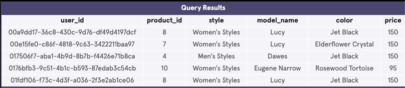
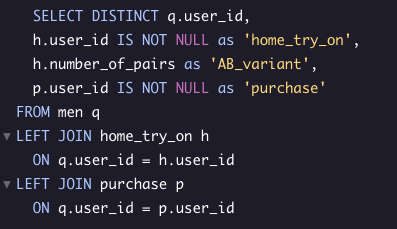
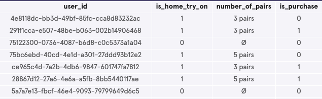
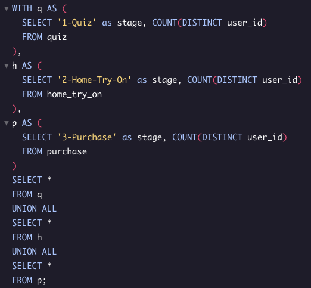
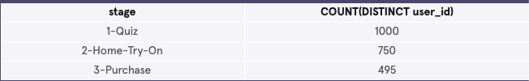
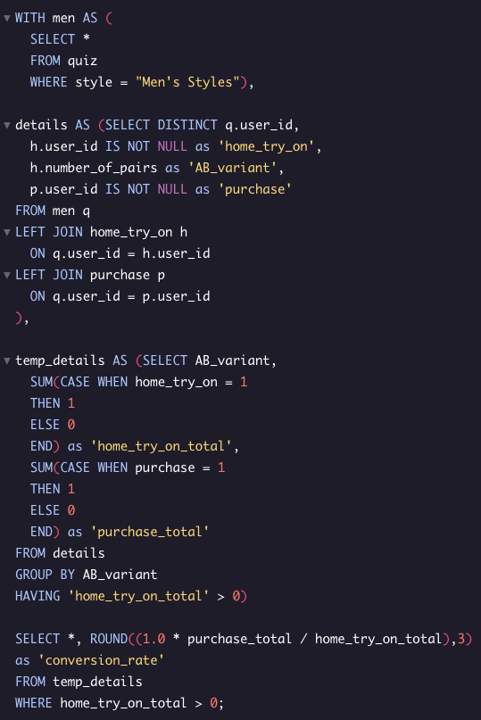

In this project I will analyze different Warby Parker’s marketing funnels in order to calculate conversion rates.
First things first, I want to get a feel for the data. There are three tables, I'll run three queries to see the first five rows of each dataset.
SELECT * FROM quiz LIMIT 5;
SELECT * FROM home_try_on LIMIT 5;
SELECT * FROM purchase LIMIT 5;
Next, I'm going to tie together the data using joins based on user_id. This will start to give us some valuable data.
Query Results
Let's start looking at conversion. Does everyone that takes the quiz go on to try on? What about purchasing?

Query Results
Now we a starting point for our conversion rate. Does conversion rate differ depending on if the user tried on 3 pairs or 5 pairs of glasses? How about for men's styles? Let's find out!
